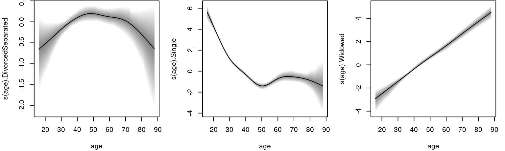

multinomial.RmdThis vignette is based on Yee (2010). The data is about the marital status of white male in New Zealand in the early 1990s. The aim of this analysis is to explore how the marital status varies with age. The data can be loaded with
## age ethnicity mstatus
## 1 29 European Single
## 2 55 European Married/Partnered
## 3 44 European Married/Partnered
## 4 53 European Divorced/Separated
## 5 45 European Married/Partnered
## 7 30 European Single
levels(marital.nz$mstatus)## [1] "Divorced/Separated" "Married/Partnered" "Single"
## [4] "Widowed"The response mstatus has 4 levels. We use a multinomial logit model to estimate the age effect, therefore, one category needs to be specified as a reference category. The model can be estimated with
## Model formula, each category may
## have different model terms.
f <- list(
mstatus ~ s(age),
~ s(age),
~ s(age)
)
## Set the seed for reproducibility.
set.seed(123)
## Estimate.
b <- bamlss(f, family = "multinomial", data = marital.nz,
reference = "Married/Partnered")The model summary gives
summary(b)##
## Call:
## bamlss(formula = f, family = "multinomial", data = marital.nz,
## reference = "Married/Partnered")
## ---
## Family: multinomial
## Link function: DivorcedSeparated = log, Single = log, Widowed = log
## *---
## Formula DivorcedSeparated:
## ---
## DivorcedSeparated ~ s(age)
## -
## Parametric coefficients:
## Mean 2.5% 50% 97.5% parameters
## (Intercept) -2.678 -2.810 -2.677 -2.553 -2.673
## -
## Acceptance probability:
## Mean 2.5% 50% 97.5%
## alpha 0.9775 0.7937 0.9999 1
## -
## Smooth terms:
## Mean 2.5% 50% 97.5% parameters
## s(age).tau21 3.454e+00 3.415e-04 1.359e+00 2.122e+01 0.760
## s(age).alpha 8.921e-01 2.488e-01 9.882e-01 1.000e+00 NA
## s(age).edf 2.883e+00 1.003e+00 2.834e+00 5.178e+00 2.471
## ---
## Formula Single:
## ---
## Single ~ s(age)
## -
## Parametric coefficients:
## Mean 2.5% 50% 97.5% parameters
## (Intercept) -2.498 -2.622 -2.498 -2.371 -2.483
## -
## Acceptance probability:
## Mean 2.5% 50% 97.5%
## alpha 0.9893 0.9060 1.0000 1
## -
## Smooth terms:
## Mean 2.5% 50% 97.5% parameters
## s(age).tau21 50.13453 10.49526 36.35219 172.98182 38.128
## s(age).alpha 0.69769 0.01797 0.83127 1.00000 NA
## s(age).edf 6.14119 4.89753 6.10817 7.61407 6.153
## ---
## Formula Widowed:
## ---
## Widowed ~ s(age)
## -
## Parametric coefficients:
## Mean 2.5% 50% 97.5% parameters
## (Intercept) -5.021 -5.418 -5.015 -4.639 -5.007
## -
## Acceptance probability:
## Mean 2.5% 50% 97.5%
## alpha 0.9676 0.7179 1.0000 1
## -
## Smooth terms:
## Mean 2.5% 50% 97.5% parameters
## s(age).tau21 1.104e+00 9.176e-05 1.774e-02 1.187e+01 0.000
## s(age).alpha 9.515e-01 6.050e-01 9.993e-01 1.000e+00 NA
## s(age).edf 1.358e+00 9.999e-01 1.052e+00 3.758e+00 0.999
## ---
## Sampler summary:
## -
## DIC = 6548.918 logLik = -3266.961 pd = 14.9952
## runtime = 23.48
## ---
## Optimizer summary:
## -
## AICc = 6545.31 edf = 12.6224 logLik = -3260.004
## logPost = -3282.925 nobs = 6053 runtime = 3.083and suggests reasonable acceptance rates. However, for a final model run it is recommend to increase the number of iteration, the burn-in phase as well as the thinning parameter of the sampling engine function sam_GMCMC(). The estimated effects can be plotted with
 To calculate estimated age dependent probabilities for each category, we use the predict.bamlss() method.
## Create a data frame for prediction.
nd <- data.frame("age" = seq(20, 90, length = 100))
## Predict for the three levels.
p <- predict(b, newdata = nd, type = "parameter")Now, note that the specification of the predictors in the multinomial_bamlss() family is based on a logarithmic link, therefore, to compute the probabilities we run the following code:
probs <- list()
for(j in names(p))
probs[[j]] <- p[[j]] / (1 + rowSums(do.call("cbind", p)))
probs <- as.data.frame(probs)
probs[["MarriedPartnered"]] <- 1 - rowSums(probs)The estimated probabilities can then be visualized with:
par(mar = c(4.1, 4.1, 1.1, 1.1))
plot2d(probs ~ age, data = nd, col.lines = rainbow_hcl(4),
lwd = 2, scheme = 1, ylab = "Fitted probabilities", ylim = c(0, 1))
legend("center", names(probs), lty = 1, lwd = 2, col = rainbow_hcl(4))Umlauf, Nikolaus, Nadja Klein, Achim Zeileis, and Thorsten Simon. 2024. bamlss: Bayesian Additive Models for Location Scale and Shape (and Beyond). https://CRAN.R-project.org/package=bamlss.
Yee, Thomas W. 2010. “The VGAM Package for Categorical Data Analysis.” Journal of Statistical Software 32 (10): 1–34. https://doi.org/10.18637/jss.v032.i10.